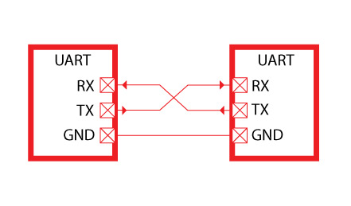
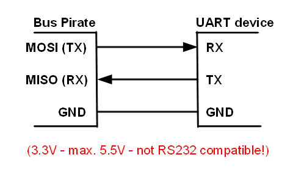
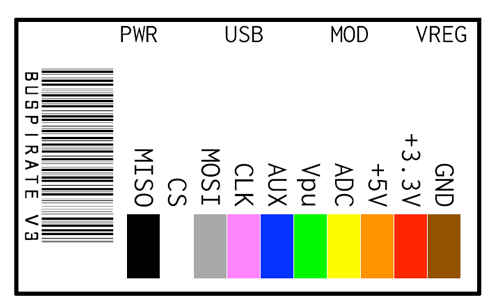
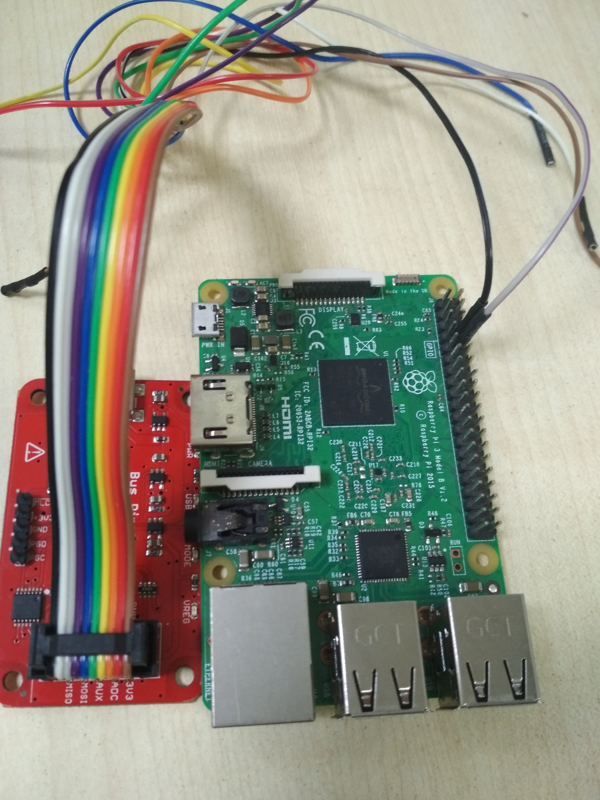

UART using Bus Pirate
Introduction
In this tutorial we will see how you can use Bus Pirate board for UART communications. We will be using raspberry pi as target device. UART stands for Universal Asynchronous Receiver/Transmitter. It's not a communication protocol like SPI and I2C, but rather a physical circuit which transmits and receives serial data.

UART transmit data asynchronously, which means there is no clock signal to synchronize the output of bits from the transmitting UART to the sampling of bits by the receiving UART. Instead of a clock signal, the transmitting UART adds start and stop bits to the data packet being transferred. These bits define the beginning and end of the data packet so the receiving UART knows when to start reading the bits.

Now you must be wondering which pins on bus pirate are for UART communication, according to dangerous prototype's website manual MISO(Master Input Slave Output) act as Rx and MOSI(Master Output Slave Input) act as Tx and if you are using ribbon cable see the 2nd image below to indetify your pins according to color scheme.


RaspberryPi setup
In order to interact with RaspberryPi's UART pins which are pin 8(BCM 14)(Tx) and pin 10(BCM 15)(Rx), we have to enable serial interfacing option via raspi-config command line utility
sudo raspi-config
Select option 5, Interfacing options, then option P6, Serial, and select Yes. Exit raspi-config.
Final setup

Note that BusPirate and RaspberryPi works on same baudrate of 115200bps(bits per second) which is the speed at which they transmit and recieve data over serial communication. After connecting BusPirate to your USB port follow the screencast below and when you reach to last prompt you can plug your RaspberryPi to power source(from BusPirate 3.3v or via USB) and you will see the booting screen. Upon successful boot you will be able to interact with shell as you would generally do via SSH.
Takeway from this tutorial
Often times routers and other IoT devices exposes root shell over UART pins, you can find out Rx and Tx pins with help of a digital voltage meter but that's we will save it for the another tutorial, peace out!